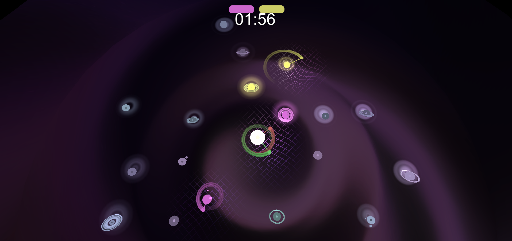

Celestial
The topic for the post semester game jam was "button". For this we came up with the concept to reduce the control scheme of the game to only one button.
Gameplay
The game can be played with up to four players. The player controls one sphere which is flying in a certain direction. By pressing the button it will circle with its entry radius around the nearest planet. By circling around it the player controls the planet. The player has to be careful and prevent hitting a planet directly because the sphere will be destroyed and respawns after a certain time.
The objective of the game is to be the player that controls the most planets after the time for the game is finished.
What I worked on
I was mainly responsible for creating the playing field with the different planets. I also worked on the adaptive camera. This was quite important because all players needed to be visible even when they are in different parts of the map.